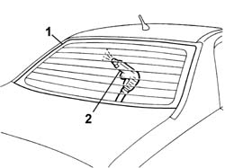

7035B04 REARSCREEN - Elimination of water penetration
- Path
- Procedures > 70 FITTINGS > 7035 BODY WINDOW GLASSES > 7035B REARSCREEN > 7035B04 REARSCREEN - Elimination of water penetration
- Kind
- repair procedure (removal / refitting; the operation number is the code)
- Applies to
- all engines; all production periods
- Interactive page
- https://sloeber94.github.io/elrnDB-lThss/en/#/80332
Applies to: all engines; all production periods
1. Wet the outer part of the rearscreen using soapy water.
2. Blow through from the inside using an air jet and identify the penetration point.

Applies to: all engines; all production periods
- If the penetration point is small, detach the interfering comonents and seal the area involved from the inside using a suitable sealant.
- Wait for it to dry and repeat the test.
- If the penetration point is larger.
See in Op. 7035B26 REARSCREEN GLASS - Clean edges and sand small abrasions